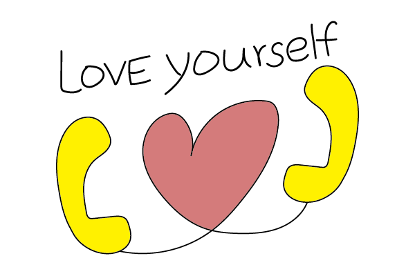
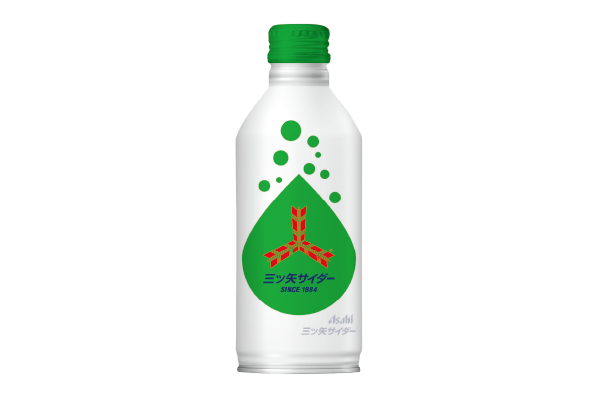
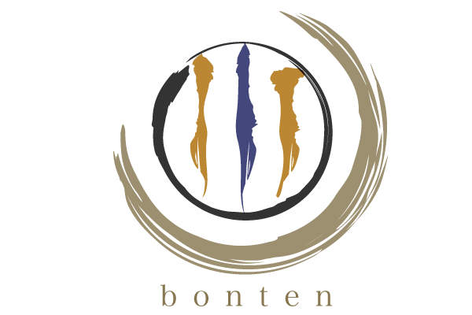

Works.
Logo
-

Love Yourself
- 制作年月日：2017/08/02
- 制作期間：3days/ Design
- 制作環境：Illustrator/ Photoshop
Theme | 群馬県いのちの電話ロゴコンテスト（応募作品）
Concept | 悩みを抱えた人に寄り添う
Target | 悩みを抱えている方々
Goal | 悩みを抱えた人が親近感を抱いて電話をかけやすくすること
Point | 制作の工夫
- 色合いを明るくし、電話がかけやすいイメージ
- 手書き風文字とイラストで親近感のあるデザイン
-

三ツ矢サイダー
- 制作年月日：2017/08/18
- 制作期間：7days/ Design
- 制作環境：Illustrator/ Photoshop
Theme | 三ツ矢サイダーボトルデザインコンテスト（応募作品）
Concept | 冬でもシュワっと楽しく三ツ矢サイダー
Target | 中高生
Goal | 三ツ矢サイダーの冬季売り上げの向上
Point | 制作の工夫
- 一貫した三ツ矢サイダーのイメージを損なわない緑を使用
- サイダーのシュワっと感と雪の降る様子を泡で表現
-

bonten
- 制作年月日：2018/11/24
- 制作期間：14days/ Design
- 制作環境：Illustrator/ Photoshop
Theme | 伊達政宗モチーフのジュエリーブランドロゴ
Concept | 高貴に、気高く
Target | 新社会人の女性
Goal | ブランドのコンセプトへの共感
Point | 制作の工夫
- 家紋をモチーフとし、質感を毛筆にすることで大人らしさと気高さを表現
- 金色を使うことで高貴さを演出